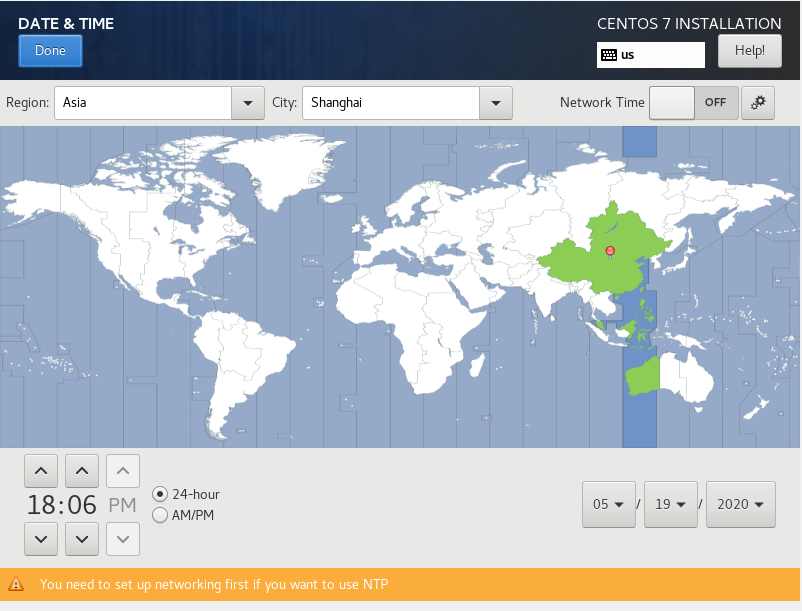

前言
学习使用
1. 企业私有网络构建运维
2. Linux系统与服务构建运维
2.1. Linux操作系统介绍
2.1.1. Linux操作系统简介
Linux 内核最初只是由芬兰人林纳斯·托瓦兹（Linus Torvalds）在赫尔辛基大学上学时出于个人爱好而编写的。1992年3月，内核1.0版本的推出，标志着Linux第一个正式的版本的诞生。
Linux 是一套免费使用和自由传播的类 Unix 操作系统，是一个基于 POSIX 和 Unix 的多用户、多任务、支持多线程和多 CPU 的操作系统。
Linux 能运行主要的 Unix 工具软件、应用程序和网络协议。它支持 32 位和 64 位硬件。Linux 继承了 Unix 以网络为核心的设计思想，是一个性能稳定的多用户网络操作系统。
2.1.2. Linux系统特点与组成
Linux的特点
-
开放性
-
多用户
-
多任务
-
出色的速度性能
-
良好的用户界面
-
丰富的网络功能
-
可靠的系统安全
-
良好的可移植性
-
具有标准兼容性
Linux系统的组成
Linux系统由四个部分组成：内核（Kernel），命令解释层（Shell），文件系统和应用程序。
-
Linux内核：
-
命令解释层：
-
Linux文件系统：
-
Linux应用系统：
2.1.3. Linux系统的版本
Linux系统的版本分为内核版本和发行版本两种。
Linux 的发行版说简单点就是将 Linux 内核与应用软件做一个打包。
目前市面上较知名的发行版有：Ubuntu、RedHat、CentOS、Debian、Fedora、SuSE、OpenSUSE、Arch Linux、SolusOS 等。
2.1.4. Linux系统应用领域
-
教育与服务领域
-
云计算领域
-
嵌入式领域
-
企业领域
-
超级计算领域
-
桌面领域
2.1.5. Linux操作系统安装实战
Linux最小化安装，安装时需要按照一下步骤进行：
1.安装时请选择英文界面，然后单击右下角 Continue 按钮。
2.单击 DATA & TIME 设置系统时区为 Asia Shanghai，设置完成单击左上角 Done 按钮。


3.单击 INSTALLATION DESTINATION 按钮进行分区。
4.选择磁盘并选中 I will configure partioning 单选按钮，单击左上角 Done 按钮，进行手动分区。
5.单击 Click here to create them automatically 按钮自动创建分区，分区完成单击左上角 Done 按钮。
6.单击 Accept Changes 按钮保存修改。
7.单击 Begin Installation 按钮开始安装。

8.单击 ROOT PASSWORD 按钮设置root密码，设置密码为000000。单击两次 Done 按钮保存退出。
9.安装完成后单击右下角 Reboot 按钮重启系统。
10.输入用户名密码登录系统，操作系统安装完成。
2.2. 逻辑卷管理LVM
2.2.1. LVM概念
LVM是逻辑盘卷管理（Logical Volume Manager）的简称，它是Linux环境下对磁盘分区进行管理的一种机制，LVM是建立在硬盘和分区之上的一个逻辑层，来提高磁盘分区管理的灵活性。
2.2.2. LVM基本术语
术语 |
术语解释 |
PV（Physical Volume）- 物理卷 |
物理的磁盘分区,是lvm的基本存储逻辑块 |
VG（Volumne Group）- 卷组 |
由一个或者多个物理卷组成,可以在卷组上面创建一个或多个逻辑卷 |
LV（Logical Volume）- 逻辑卷 |
就是从VG中划分的逻辑分区,在逻辑卷上可以创建文件系统(比如/home,/usr等) |
PE（Physical Extent）- 物理区域 |
每一个物理卷被划分为称为PE(Physical Extents)的基本单元，具有唯一编号的PE是可以被LVM寻址的最小单元。PE的大小是可配置的，默认为4MB |
LE（Logical Extent）- 逻辑区域 |
逻辑卷也被划分为被称为LE(Logical Extents) 的可被寻址的基本单位。在同一个卷组中，LE的大小和PE是相同的，并且一一对应 |
2.2.3. LVM逻辑卷操作
1.部署逻辑卷
2.扩容逻辑卷
3.缩小逻辑卷
4.删除逻辑卷
2.2.4. LVM逻辑卷的使用案例
查看当前磁盘情况： lsblk
创建物理卷
创建物理卷之前，需要对磁盘进行分区。首先使用 fdisk 命令对sdb进行分区操作，分区两个大小为5GB的分区，命令如下：
分区完成 使用 lsblk 查看当前磁盘情况
分区完成后，对这两个分区进行创建物理卷操作，命令如下：
pvcreate /dev/sdb1 /dev/sdb2创建完毕后，可以查看物理卷的简单信息于详细信息，命令如下：
物理卷简单信息
pvs物件卷详细信息
pvdisplay创建卷组
使用刚才创建好的两个物理卷，创建名为myvg的卷组，命令如下：
vgcreate myvg /dev/sdb[1-2]查看卷组信息，（可以查看到创建myvg卷组，名字为centos的卷组是系统卷组，因为在安装系统的时候，是使用LVM模式安装的）命令如下：
vgs查看卷组详细信息，命令如下：
vgdisplay删除卷组
删除卷组，命令如下：
vgremove myvg重新创建卷组，并指定PE大小为16MB，命令如下：
vgcreate -s 16m myvg /dev/sdb[1-2]向卷组中添加物理卷
先使用 fdisk 命令，在/dev/sdb上再分一个/dev/sdb3分区

将创建的/dev/sdb3添加到myvg卷组中，在添加的过程中，会自动将/dev/sdb3创建为物理卷，命令如下：
vgextend myvg /dev/sdb3可以查看到现在卷组中存在3个物理卷设备
创建逻辑卷
创建逻辑卷，名称为mylv，大小为5GB。命令如下：
lvcreate -L +5G -n mylv myvg-
-L：创建逻辑卷的大小 large
-
-n：创建逻辑卷名称 name
查看逻辑卷，命令如下：
lvs扫描上一步创建的lv逻辑卷，命令如下：
lvscan使用ext4文件系统格式化逻辑卷mylv，命令如下：
mkfs.ext4 /dev/mapper/myvg-mylv把逻辑卷mylv挂载到/mnt 下并验证，命令如下：
mount /dev/mapper/myvg-mylv /mnt/扩容逻辑卷
对创建的LVM卷扩容至1GB，命令如下：
lvextend -L +1G /dev/mapper/myvg-mylv此时可以查看到LVM卷的大小变成了6GB，但是挂载信息中没有发生变化，这时系统还识别不了新添加的磁盘文件系统，所以还需要对文件系统进行扩容，命令如下：
resize2fs /dev/mapper/myvg-mylv扩容逻辑卷成功
2.3. FTP服务
2.3.1. FTP简介
FTP(File Transfer Protocol)文件传输协议，用于Internet上控制文件的双向传输。
下载：远程主机拷贝文件至本地；
上传：本地主机拷贝文件至远程。
2.3.2. FTP数据传输模式
主动模式：服务端从20端口主动向客户端发起连接，即20端口向客户端的一个随机端口传输数据。
被动模式：服务端在指定范围内某个端口被动等待客户端连接，即服务端采用随机端口等待客户端的随机端口来访问，从而传输数据（FTP的默认工作模式）。
以服务器角度来分别是否主动和被动。
2.3.3. FTP典型消息
消息号 |
含义 |
125 |
数据连接打开，传输开始 |
200 |
命令OK |
226 |
数据传输完毕 |
331 |
用户名OK，需要输入密码 |
425 |
不能打开数据连接 |
426 |
数据连接被关闭，传输被中断 |
452 |
错误写文件 |
500 |
语法错误 |
530 |
未登入 |
2.3.4. FTP服务的使用者
-
本地用户（Real用户）：账号名称、密码等信息保存早passwd/shadow文件中
-
虚拟用户（Guest用户）：使用独立的账号和密码数据文件
-
匿名用户 （Anonymous/FTP用户 ）
2.3.5. FTP服务的使用案例
本地yum搭建
| 在搭建之前，先确定虚拟机的 CD/DVD(IDE) 选项是已勾选状态 |
mkdir -p /opt/centosmount /dev/cdrom /opt/centosmv /etc/yum.repos.d/* /media/cat << EOF > /etc/yum.repos.d/local.repo
[centos]
name=centos
baseurl=file:///opt/centos
gpgcheck=0
enabled=1
EOFyum clean all
yum makecache至此本地yum搭建完成
安装FTP服务
setenforce 0
systemctl stop firewalldecho SELINUX=disabled>/etc/selinux/config
echo SELINUXTYPE=targeted>>/etc/selinux/configyum -y install vsftpdecho 'anon_root=/opt' >> /etc/vsftpd/vsftpd.confsystemctl start vsftpdsystemctl status vsftpd在浏览器访问ftp://服务器IP地址，可查看到/opt目录下的文件，都被FTP服务成功共享。

2.4. NFS服务
2.4.1. NFS概念
NFS 是Network File System的缩写，即网络文件系统。一种使用于分散式文件系统的协定，由Sun公司开发，于1984年向外公布。功能是通过网络让不同的机器、不同的操作系统能够彼此分享个别的数据，让应用程序在客户端通过网络访问位于服务器磁盘中的数据，是在类Unix系统间实现磁盘文件共享的一种方法。
NFS 的基本原则是“容许不同的客户端及服务端通过一组RPC分享相同的文件系统”，它是独立于操作系统，容许不同硬件及操作系统的系统共同进行文件的分享。
NFS在文件传送或信息传送过程中依赖于RPC协议。RPC，远程过程调用 (Remote Procedure Call) 是能使客户端执行其他系统中程序的一种机制。NFS本身是没有提供信息传输的协议和功能的，但NFS却能让我们通过网络进行资料的分享，这是因为NFS使用了一些其它的传输协议。而这些传输协议用到这个RPC功能的。可以说NFS本身就是使用RPC的一个程序。或者说NFS也是一个RPC SERVER。所以只要用到NFS的地方都要启动RPC服务，不论是NFS SERVER或者NFS CLIENT。这样SERVER和CLIENT才能通过RPC来实现PROGRAM PORT的对应。可以这么理解RPC和NFS的关系：NFS是一个文件系统，而RPC是负责负责信息的传输。
2.4.2. NFS组成
-
RPC 主程序：rpcbind：提供RPC的端口映射的守护进程及其相关文档、执行文件等
-
NFS 主程序：nfs-utils：包含NFS服务器端守护进程和NFS客户端相关工具
2.4.3. NFS服务的使用案例
| 在操作之前请先确定两个节点的SELINUX和FIREWALLD都处于关闭状态 |
| IP地址 | 主机名 | 节点 |
|---|---|---|
192.168.1.101 |
nfs-server |
NFS服务节点 |
192.168.1.105 |
nfs-client |
NFS客户端节点 |
1.配置步骤
#修改主机名
hostnamectl set-hostname nfs-server
#安装NFS相关组件
yum -y install nfs-utils rpcbind
#创建一个共享目录
mkdir /mnt/test
#编辑NFS服务配置文件
echo "/mnt/test 192.168.1.0/24(rw,no_root_squash,no_all_squash,sync,anonuid=501,anongid=501)" >> /etc/exports
#生效配置
exportfs -r
#启动NFS
systemctl start rpcbind
systemctl start nfs
#设置为开机自启
systemctl enable rpcbind
systemctl enable nfs| 内容 | 说明 |
|---|---|
/mnt/test |
为共享目录（若没有这个目录，请新建一个） |
192.168.1.0/24 |
可以为一个网段，一个IP，也可以是域名。域名支持通配符，例如：*.qq.com |
rw |
read-write 可读写 |
ro |
read-only 只读 |
sync |
文件同时写入硬盘和内存 |
async |
文件暂存于内存，而不是直接写入内存 |
wdelay |
延迟写操作 |
no_root_squash |
NFS客户端连接服务端时，如果使用的是root，那么对服务端共享的目录来说，也拥有root权限。显示开启这项时不安全的 |
root_squash |
NFS客户端连接服务端时，如果使用的是root，那么对服务端共享的目录来说，拥有匿名用户权限，通常它将使用nobody和nfsnobody身份 |
all_squash |
不论NFS客户端连接服务器时使用什么用户，对服务端共享的目录来说，都拥有匿名用户权限 |
anonuid |
匿名用户的UID（User Identification，用户身份证明）值，可以再此处自行设定 |
anongid |
匿名用户的GID（Group Identification，共享资源系统使用者的群体身份）值 |
2.配置步骤
#修改主机名
hostnamectl set-hostname nfs-client
#安装NFS相关组件
yum -y install nfs-utils rpcbind
#进行NFS共享目录的挂载
mount -t nfs 192.168.1.101:/mnt/test /mnt/nfs-server 端查看可挂载目录，命令如下：
showmount -e 192.168.1.101nfs-client 端查看挂载情况，命令如下：
df -h可以看到nfs-server节点的/mnt/test 目录已经挂载到nfs-client节点下的/mnt目录下
在nfs-client节点的/mnt 目录下创建一个abc.txt的文件并计算MD5值，如下
回到nfs-server节点进行验证，如下
可发现，在client节点创建的文件和server节点的文件是一样的
2.5. CIFS服务
2.5.1. CIFS概念
CIFS（Common Internet File System，通用网络文件系统）它使程序可以访问远程计算机上的文件并要求此计算机提供服务。
CIFS 使用 C/S 模式。客户程序请求远在服务器上的服务器程序为它提供服务。服务器获得请求并返回响应。CIFS是公共的或开放的SMB协议版本，并由微软使用。
SMB协议在局域网上用于服务器文件访问和打印的协议。像SMB协议一样，CIFS在高层运行，而不像TCP/IP协议那样运行在底层。CIFS可以看做是应用程序协议如文件传输协议和超文本传输协议的一个实现。
2.5.2. Samba功能
Samba最大的功能就是可以用于Linux与windows系统直接的文件共享和打印共享，Samba既可以用于windows与Linux之间的文件共享，也可以用于Linux与Linux之间的资源共享，由于NFS(网络文件系统）可以很好的完成Linux与Linux之间的数据共享，因而 Samba较多的用在了Linux与windows之间的数据共享上面。
SMB是基于客户机/服务器型的协议，因而一台Samba服务器既可以充当文件共享服务器，也可以充当一个Samba的客户端，例如，一台在Linux 下已经架设好的Samba服务器，windows客户端就可以通过SMB协议共享Samba服务器上的资源文件，同时，Samba服务器也可以访问网络中 其它windows系统或者Linux系统共享出来的文件。 Samba在windows下使用的是NetBIOS协议，如果你要使用Linux下共享出来的文件，请确认你的windows系统下是否安装了NetBIOS协议。
-
smbd进程监听TCP：139（NetBIOS over TCP/IP）和TCP：445（SMB over TCP/CIFS）端口
-
nmbd进程监听UDP：137（NetBIOS-ns）和UDP：138（NetBIOS-dgm）端口
其他功能
1.身份验证和权限设置
2.名称解析
3.浏览服务
2.5.3. Samba工作原理
Samba的工作原理是，让Windows系列操作系统网络邻居的通讯协议——NETBIOS（NETwork Basic Input/Output System）和SMB（Server Message Block）这两个协议在TCP/IP通信协议上运行，并且使用Windows的NETBEUI协议让Linux可以在网络邻居上被Windows看到。其中最重要的就是SMB（Server Message Block）协议，在所有的诸如Windows Server 2003、Windows XP等Windows系列操作系统中广为应用。Samba就是SMB服务器在类UNIX系统上的实现，目前可以在几乎所有的UNIX变种上运行。
2.5.4. CFIS服务的使用案例
yum -y install sambacp /etc/samba/smb.conf /etc/samba/smb.conf.defaultcat << EOF > /etc/samba/smb.conf
# See smb.conf.example for a more detailed config file or
# read the smb.conf manpage.
# Run 'testparm' to verify the config is correct after
# you modified it.
[global]
workgroup = SAMBA
security = user
passdb backend = tdbsam
; printing = cups
; printcap name = cups
load printers = no
cups options = raw
disable spoolss = yes
[homes]
comment = Home Directories
valid users = %S, %D%w%S
browseable = No
read only = No
inherit acls = Yes
[printers]
comment = All Printers
path = /var/tmp
printable = Yes
create mask = 0600
browseable = No
[print$]
comment = Printer Drivers
path = /var/lib/samba/drivers
write list = @printadmin root
force group = @printadmin
create mask = 0664
directory mask = 0775
[share]
path=/opt/share
browseable = yes
public = yes
writeable = yes
EOF-
/opt/share：这个目录是将要共享的目录，若没有，需要创建
-
browseable：参数是操作权限
-
public：参数是访问权限
-
writable：参数是对文件的操作权限
mkdir /opt/share
chmod 777 /opt/share/smbpasswd -a root| 这里创建的Samba用户必须时系统存在的用户 |
systemctl start smb
systemctl start nmbsystemctl enable smb
systemctl enable nmb先查看Samba服务器IP地址和共享目录下有哪些文件
在windows下的运行对框话里输入 \\192.168.1.105
按下回车输入刚才我们创建的Samba用户名和密码确认即可看到我们的服务器上配置的共享目录下的文件
| Samba默认会共享用户目录，share则是通过配置文件共享的目录 |
2.6. LNMP搭建
2.6.1. LNMP组成介绍
LNMP（Linux-Nginx-MySQL-PHP）网站架构是目前国际流行的Web框架，该框架包括：Linux操作系统，Nginx网络服务器，MySQL数据库，PHP编程语言，所有组成产品均是免费开源软件，这四种软件组合到一起，成为一个免费、高效的网站服务系统。
2.6.2. LNMP工作原理
浏览器发送http request请求到服务器（Nginx）,服务器响应并处理web请求。如果是静态文本直接返回，否则将脚本（PHP）通过接口传输协议（网关协议）PHP-FCGI（fast-cgi）传输给PHP-FPM（进程管理程序）,然后PHP-FPM调用PHP解析器的其中一个进程PHP-CGI来解析php脚本信息。【PHP-FPM在启动时启动了多个PHP-CGI子进程，并发执行。】然后将解析后的脚本返回到PHP-FPM，PHP-FPM再通过fast-cgi的形式将脚本信息传送给Nginx。服务器再通过Http response的形式传送给浏览器。浏览器再进行解析与渲染然后进行呈现。
2.6.3. LNMP安装方式
| 安装方式 | 特点说明 |
|---|---|
YUM/RPM |
简单，速度快，环境部署简单，新手入门快。 |
源码 |
需要一定的Linux基础，安装时间长，安装路径设置多，但能够按需定制安装 |
源码结合YUM/RPM |
把源码软件制作成符合要求的RPM，放到YUM仓库，然后通过YUM方式安装，这样结合上面两种方法去安装，即可定制软件，也可也快速完成安装 |
一键安装集成包 |
安装时间适中，新手入门快，简爱，可以定制安装软件，不需要自己安装，，只需要选择即可。但需要网络连接下载相关的依赖包和软件包 |
2.6.4. WordPress介绍
WordPress是一种使用PHP语言开发的网站平台。目前，WordPress是最多人和最容易使用的网站建立工具 (或内容管理系统，英文是CMS或Content Management System)。你现在浏览的这个网站 JiuStore.com也用WordPress搭建的。我们在JiuStore添加了简单的论坛功能，会员功能，购物功能，和博客功能。我们只需要安装免费插件就可以 (安装和使用插件都是非常简单的)。
2.6.5. 构建LNMP+WordPress案例
安装Nginx
cat << EOF > /etc/yum.repos.d/nginx.repo
[nginx-stable]
name=nginx stable repo
baseurl=http://nginx.org/packages/centos/\$releasever/\$basearch/
gpgcheck=1
enabled=1
gpgkey=https://nginx.org/keys/nginx_signing.key
module_hotfixes=true
[nginx-mainline]
name=nginx mainline repo
baseurl=http://nginx.org/packages/mainline/centos/\$releasever/\$basearch/
gpgcheck=1
enabled=0
gpgkey=https://nginx.org/keys/nginx_signing.key
module_hotfixes=true
EOF|
EPEL 源中的 |
yum install -y nginxecho y|cp /etc/nginx/nginx.conf /etc/nginx/nginx.conf.defaultcat << EOF > /etc/nginx/nginx.conf
# For more information on configuration, see:
# * Official English Documentation: http://nginx.org/en/docs/
# * Official Russian Documentation: http://nginx.org/ru/docs/
user nginx;
worker_processes auto;
error_log /var/log/nginx/error.log warn;
pid /var/run/nginx.pid;
worker_rlimit_nofile 65535;
events {
worker_connections 65535;
}
http {
include /etc/nginx/mime.types;
default_type application/octet-stream;
log_format main '\$host \$server_port \$remote_addr - \$remote_user [\$time_local] "\$request" '
'\$status \$request_time \$body_bytes_sent "\$http_referer" '
'"\$http_user_agent" "\$http_x_forwarded_for"';
access_log /var/log/nginx/access.log main;
sendfile on;
tcp_nopush on;
tcp_nodelay on;
keepalive_timeout 65;
types_hash_max_size 2048;
server_names_hash_bucket_size 128;
server_name_in_redirect off;
client_header_buffer_size 32k;
large_client_header_buffers 4 32k;
client_header_timeout 3m;
client_body_timeout 3m;
client_max_body_size 50m;
client_body_buffer_size 256k;
send_timeout 3m;
gzip on;
gzip_min_length 1k;
gzip_buffers 4 16k;
gzip_http_version 1.0;
gzip_comp_level 2;
gzip_types text/plain application/x-javascript text/css application/xml;
gzip_vary on;
proxy_redirect off;
proxy_set_header Host \$host;
proxy_set_header X-Real-IP \$remote_addr;
proxy_set_header REMOTE-HOST \$remote_addr;
proxy_set_header X-Forwarded-For \$proxy_add_x_forwarded_for;
proxy_connect_timeout 60;
proxy_send_timeout 60;
proxy_read_timeout 60;
proxy_buffer_size 256k;
proxy_buffers 4 256k;
proxy_busy_buffers_size 256k;
proxy_temp_file_write_size 256k;
proxy_next_upstream error timeout invalid_header http_500 http_503 http_404;
proxy_max_temp_file_size 128m;
#让代理服务端不要主动关闭客户端的连接，协助处理499返回代码问题
proxy_ignore_client_abort on;
fastcgi_buffer_size 64k;
fastcgi_buffers 4 64k;
fastcgi_busy_buffers_size 128k;
index index.html index.htm index.php default.html default.htm default.php;
# Load modular configuration files from the /etc/nginx/conf.d directory.
# See http://nginx.org/en/docs/ngx_core_module.html#include
# for more information.
include /etc/nginx/conf.d/*.conf;
}
EOFmkdir /etc/nginx/conf.d
cat << EOF > /etc/nginx/conf.d/default.conf
server {
listen 80 default_server;
listen [::]:80 default_server;
server_name _;
root /usr/share/nginx/html;
# Load configuration files for the default server block.
include /etc/nginx/default.d/*.conf;
location / {
}
error_page 404 /404.html;
location = /40x.html {
}
error_page 500 502 503 504 /50x.html;
location = /50x.html {
}
}
EOFnginx -t && rm -f /var/run/nginx.pid|
需要手动删除 from nginx/1.16.1 |
systemctl start nginx# systemctl status nginx
● nginx.service - The nginx HTTP and reverse proxy server
Loaded: loaded (/usr/lib/systemd/system/nginx.service; disabled; vendor preset: disabled)
Active: active (running) since Fri 2019-11-29 14:02:31 CST; 1h 18min ago
Main PID: 15759 (nginx)
CGroup: /system.slice/nginx.service
├─15759 nginx: master process /usr/sbin/nginx
└─17285 nginx: worker process
Nov 29 14:02:31 iZ6weebcmroarpx8rrxscrZ systemd[1]: Starting The nginx HTTP and reverse proxy server...
Nov 29 14:02:31 iZ6weebcmroarpx8rrxscrZ nginx[15753]: nginx: the configuration file /etc/nginx/nginx.conf syntax is ok
Nov 29 14:02:31 iZ6weebcmroarpx8rrxscrZ nginx[15753]: nginx: configuration file /etc/nginx/nginx.conf test is successful
Nov 29 14:02:31 iZ6weebcmroarpx8rrxscrZ systemd[1]: Failed to parse PID from file /run/nginx.pid: Invalid argument
Nov 29 14:02:31 iZ6weebcmroarpx8rrxscrZ systemd[1]: Started The nginx HTTP and reverse proxy server.
# ss -antpl|grep nginx
LISTEN 0 128 *:80 *:* users:(("nginx",pid=17285,fd=6),("nginx",pid=15759,fd=6))
LISTEN 0 128 :::80 :::* users:(("nginx",pid=17285,fd=7),("nginx",pid=15759,fd=7))
systemctl enable nginx安装 MySQL
yum install -y mariadb-servermy.cnfcp /etc/my.cnf /etc/my.cnf.defaultmy.cnfcat << EOF > /etc/my.cnf
[mysqld]
datadir=/var/lib/mysql
socket=/var/lib/mysql/mysql.sock
# Disabling symbolic-links is recommended to prevent assorted security risks
symbolic-links=0
# Settings user and group are ignored when systemd is used.
# If you need to run mysqld under a different user or group,
# customize your systemd unit file for mariadb according to the
# instructions in http://fedoraproject.org/wiki/Systemd
max_allowed_packet=20M
max_heap_table_size = 100M
read_buffer_size = 2M
read_rnd_buffer_size = 16M
sort_buffer_size = 8M
join_buffer_size = 8M
tmp_table_size = 100M
# 查询缓存
#query_cache_limit=4M
#query_cache_type=on
#query_cache_size=2G
bind-address = 127.0.0.1
# 跳过主机名解析，比如localhost，foo.com之类，加速访问
skip-name-resolve
# SQL执行日志
general_log=off
general_log_file=/var/log/mariadb/general.log
# SQL慢查询日志
slow_query_log=off
slow_query_log_file=/var/log/mariadb/slowquery.log
long_query_time = 5
max_connections = 1000
# 兼容老MySQL代码，比如使用空字符串代替NULL插入数据
sql_mode = ""
[mysqld_safe]
log-error=/var/log/mariadb/mariadb.log
pid-file=/var/run/mariadb/mariadb.pid
#
# include all files from the config directory
#
!includedir /etc/my.cnf.d
EOFmysqldump 命令参数sed -i '16 aquick\nquote-names\nmax_allowed_packet = 100M' /etc/my.cnf.d/mysql-clients.cnftouch /var/log/mariadb/general.log /var/log/mariadb/slowquery.log
chown mysql:mysql /var/log/mariadb/general.log /var/log/mariadb/slowquery.logsystemctl enable mariadbMySQL 服务systemctl start mariadbMySQL 服务状态# systemctl status mariadb
● mariadb.service - MariaDB database server
Loaded: loaded (/usr/lib/systemd/system/mariadb.service; enabled; vendor preset: disabled)
Active: active (running) since Fri 2019-11-29 14:18:12 CST; 1h 7min ago
Process: 16688 ExecStartPost=/usr/libexec/mariadb-wait-ready $MAINPID (code=exited, status=0/SUCCESS)
Process: 16653 ExecStartPre=/usr/libexec/mariadb-prepare-db-dir %n (code=exited, status=0/SUCCESS)
Main PID: 16687 (mysqld_safe)
CGroup: /system.slice/mariadb.service
├─16687 /bin/sh /usr/bin/mysqld_safe --basedir=/usr
└─17043 /usr/libexec/mysqld --basedir=/usr --datadir=/var/lib/mysql --plugin-dir=/usr/lib64/mysql/plugin --log-error=/var/log/mariadb/mariadb.lo...
Nov 29 14:18:10 iZ6weebcmroarpx8rrxscrZ systemd[1]: Starting MariaDB database server...
Nov 29 14:18:10 iZ6weebcmroarpx8rrxscrZ mariadb-prepare-db-dir[16653]: Database MariaDB is probably initialized in /var/lib/mysql already, nothing is done.
Nov 29 14:18:11 iZ6weebcmroarpx8rrxscrZ mysqld_safe[16687]: 191129 14:18:11 mysqld_safe Logging to '/var/log/mariadb/mariadb.log'.
Nov 29 14:18:11 iZ6weebcmroarpx8rrxscrZ mysqld_safe[16687]: 191129 14:18:11 mysqld_safe Starting mysqld daemon with databases from /var/lib/mysql
Nov 29 14:18:12 iZ6weebcmroarpx8rrxscrZ systemd[1]: Started MariaDB database server.
# ss -antpl|grep mysql
LISTEN 0 50 127.0.0.1:3306 *:* users:(("mysqld",pid=17043,fd=14))
mysqladmin -uroot password "geek"安装 PHP7
yum install -y centos-release-sclyum install -y rh-php72 \
rh-php72-php \
rh-php72-php-bcmath \
rh-php72-php-fpm \
rh-php72-php-gd \
rh-php72-php-intl \
rh-php72-php-mbstring \
rh-php72-php-mysqlnd \
rh-php72-php-opcache \
rh-php72-php-pdo \
rh-php72-php-pecl-apcu \
rh-php72-php-xmlrpc \
rh-php72-php-develrh-php72 环境scl enable rh-php72 bash# php -v
PHP 7.2.24 (cli) (built: Nov 4 2019 10:23:08) ( NTS )
Copyright (c) 1997-2018 The PHP Group
Zend Engine v3.2.0, Copyright (c) 1998-2018 Zend Technologies
with Zend OPcache v7.2.24, Copyright (c) 1999-2018, by Zend Technologies
cp /etc/opt/rh/rh-php72/php.ini /etc/opt/rh/rh-php72/php.ini.default# 启用 '<? ... ?>' 代码风格
sed -i '197s/short_open_tag = Off/short_open_tag = On/' /etc/opt/rh/rh-php72/php.ini
# 禁止一些危险性高的函数
sed -i '314s/disable_functions =/disable_functions = system,exec,shell_exec,passthru,set_time_limit,ini_alter,dl,openlog,syslog,readlink,symlink,link,leak,popen,escapeshellcmd,virtual,socket_create,mail,eval/' /etc/opt/rh/rh-php72/php.ini
# 配置中国时区
sed -i '902s#;date.timezone =#date.timezone = Asia/Shanghai#' /etc/opt/rh/rh-php72/php.inisystemctl enable rh-php72-php-fpmPHP-FPM 服务systemctl start rh-php72-php-fpmPHP-FPM 服务状态# systemctl status rh-php72-php-fpm
● rh-php72-php-fpm.service - The PHP FastCGI Process Manager
Loaded: loaded (/usr/lib/systemd/system/rh-php72-php-fpm.service; enabled; vendor preset: disabled)
Active: active (running) since Fri 2019-11-29 13:36:03 CST; 1h 56min ago
Main PID: 15360 (php-fpm)
Status: "Processes active: 0, idle: 6, Requests: 56, slow: 0, Traffic: 0req/sec"
CGroup: /system.slice/rh-php72-php-fpm.service
├─15360 php-fpm: master process (/etc/opt/rh/rh-php72/php-fpm.conf)
├─15361 php-fpm: pool www
├─15362 php-fpm: pool www
├─15363 php-fpm: pool www
├─15364 php-fpm: pool www
├─15365 php-fpm: pool www
└─17211 php-fpm: pool www
Nov 29 13:36:03 iZ6weebcmroarpx8rrxscrZ systemd[1]: Starting The PHP FastCGI Process Manager...
Nov 29 13:36:03 iZ6weebcmroarpx8rrxscrZ systemd[1]: Started The PHP FastCGI Process Manager.
# ss -antpl|grep php-fpm
LISTEN 0 128 127.0.0.1:9000 *:* users:(("php-fpm",pid=17211,fd=9),("php-fpm",pid=15365,fd=9),("php-fpm",pid=15364,fd=9),("php-fpm",pid=15363,fd=9),("php-fpm",pid=15362,fd=9),("php-fpm",pid=15361,fd=9),("php-fpm",pid=15360,fd=7))LNMP 环境测试
mysql -uroot -pgeek -e 'create database wordpress;grant all privileges on wordpress.* to wordpress@"localhost" identified by "wordpress_password";flush privileges;'cat << EOF > /etc/nginx/conf.d/wordpress.conf
server{
listen 8080;
server_name wordpress.com;
root /data/web/wordpress.com;
error_log /var/log/nginx/wordpress.com_error.log;
access_log /var/log/nginx/wordpress.com_access.log main;
location / {
try_files \$uri /index.php$is_args\$query_string;
}
location ~ \.php$ {
root /data/web/wordpress.com;
fastcgi_pass 127.0.0.1:9000;
fastcgi_index index.php;
fastcgi_param SCRIPT_FILENAME \$document_root\$fastcgi_script_name;
include fastcgi_params;
}
}
EOF
# 重载Nginx配置
nginx -t && nginx -s reloadWordpressmkdir -p /data/web/wordpress.com
# 使用 -O 参数指定保存文件名，会强制覆盖已经存在的文件
wget https://wordpress.org/latest.tar.gz -O wordpress.tar.gz
tar xf wordpress.tar.gz
mv wordpress/* /data/web/wordpress.com
rm -rf wordpress
chown -R apache:nginx /data/web/wordpress.com
chmod -R 755 /data/web/wordpress.com最后，访问 服务器地址:8080 完成安装。
wordpress数据库相关信息：
-
数据库服务器：localhost
-
数据库端口：3306
-
数据库名称：wordpress
-
数据库用户名：wordpress
-
数据库密码：wordpress_password
3. 应用系统分布式构建运维
3.1. 分布式系统
3.1.1. 基本概念
分布式系统（distributed system）是建立在网络之上的软件系统。正是因为软件的特性，所以分布式系统具有高度的内聚性和透明性。因此，网络和分布式系统之间的区别更多的在于高层软件（特别是操作系统），而不是硬件。内聚性是指每一个数据库分布节点高度自治，有本地的数据库管理系统。透明性是指每一个数据库分布节点对用户的应用来说都是透明的，看不出是本地还是远程。在分布式数据库系统中，用户感觉不到数据是分布的，即用户不须知道关系是否分割、有无副本、数据存于哪个站点以及事务在哪个站点上执行等。
3.1.2. 分布式的特征
1.分布性
2.自治性
3.并行性
4.全局性
3.1.3. 分布式系统的优点
1.资源共享
2.加快计算速度
3.可靠性高
4.通行方便，快捷
3.1.4. 分布式系统的类别
1.分布式计算
2.分布式文件系统
3.分布式消息
4.分布式数据库系统
3.2. 分布式数据库系统
3.2.1. 基本概念
分布式数据库系统 （DDBS）包含分布式数据库管理系统（DDBMS）和分布式数据库（DDB)。在分布式数据库系统中，一个应用程序可以对数据库进行透明操作，数据库中的数据分别在不同的局部数据库中存储、由不同的 DBMS进行管理、在不同的机器上运行、由不同的操作系统支持、被不同的通信网络连接在一起。
3.2.2. 分布式数据库系统工作机制
一个分布式数据库在逻辑上是一个统一的整体，在物理上则是分别存储在不同的物理节点上。一个应用程序通过网络的连接，可以访问分布在不同地理位置的数据库中。它的分布性表现在数据库中的数据不是存储在同一场地，更确切地讲，就是不存储在同一计算机的存储设备上。
3.2.3. 分布式数据库系统的特点
1.独立的透明性
2.集中节点结合
3.复制透明性
4.易于扩展性
5.适应性
6.可靠性可用性
7.充分性
8.扩展性
3.2.4. 主从数据库
概念
MySQL 主从复制是指数据可以从一个MySQL数据库服务器主节点复制到一个或多个从节点。MySQL 默认采用异步复制方式，这样从节点不用一直访问主服务器来更新自己的数据，数据的更新可以在远程连接上进行，从节点可以复制主数据库中的所有数据库或者特定的数据库，或者特定的表。

优点
1.方便做数据的热备份。作为后备数据库，主数据库服务器故障后，可切换到从数据库服务器继续工作，避免数据丢失。
2.架构的扩展更容易。业务量越来越大，I/O访问频率过高，单击无法满足，此时做多库的存储，降低磁盘I/O访问的频率，提高单个机器的I/O性能。
3.读写分离，使数据库能支撑更大的并发。在报表中尤其重要。由于部分报表SQL语句非常的慢，导致锁表，影响前台服务。如果前台使用主库，报表使用从库，那么报表SQL将不会造成前台锁，保证了前台速度。
常见的主从形式
是最基础的复制结构，用来分担之前单台数据库服务器的压力，可以进行读写分离。
一台 Slave 承受不住读请求压力时，可以添加多台，进行负载均衡，分散读压力。还可以对多台 Slave 进行分工，服务于不同的系统，例如一部分 Slave 负责网站前台的读请求，另一部分 Slave 负责后台统计系统的请求。因为不同系统的查询需求不同，对 Slave 分工后，可以创建不同的索引，使其更好的服务于目标系统。
Master 存在下线的可能，例如故障或者维护，需要把 Slave 切换为 Master。在原来的 Master 恢复可用后，由于其数据已经不是最新的了，不能再做主，需要做为 Slave 添加进来。那么就需要对其重新搭建复制环境，需要耗费一定的工作量。双主结构就是用来解决这个问题的，互相将对方作为自己的 Master，自己作为对方的 Slave 来进行复制，但对外来讲，还是一个主和一个从。当主Master 下线时，备Master 切换为 主Master，当原来的 主Master 上线后，因为他记录了自己当前复制到对方的什么位置了，就会自动从之前的位置开始重新复制，不需要人为地干预，大大提升了效率。
当直接从属于 Master 的 Slave 过多时，连到 Master 的 Slave I/O 线程就比较多，对 Master 的压力是很大的。级联结构就是通过减少直接从属于 Master 的 Slave 数量，减轻 Master 的压力，分散复制请求，从而提高整体的复制效率。
级联复制结构解决了 Slave 过多导致的瓶颈问题，但还是有单主结构中切换主时的维护问题。那么为了解决这个问题，就可以加入上面的双主结构。在必要时，可以再对 Slaves 进行分级。Mysql 的复制结构有很多种方式，复制的最大问题是数据延时，选择复制结构时需要根据自己的具体情况，并评估好目标结构的延时对系统的影响。
3.2.5. 部署主从数据库
| IP地址 | 主机名 | 节点 |
|---|---|---|
192.168.1.102 |
mysql1 |
主数据库节点 |
192.168.1.105 |
mysql2 |
从数据库节点 |
配置部分
主数据库节点配置
#修改主机名
hostnamectl set-hostname mysql1
#关闭防火墙及SELinux服务
setenforce 0
systemctl stop firewalld
#修改/etc/hosts文件内容
cat << EOF >> /etc/hosts
192.168.1.102 mysql1
192.168.1.105 mysql2
EOF
#安装数据库服务
yum -y install mariadb mariadb-server
#启动数据库服务并设置为开机自启
systemctl start mariadb
systemctl enable mariadb
#配置数据库默认密码为000000
mysqladmin -uroot password '000000'
#备份my.cnf
cp /etc/my.cnf /etc/my.cnf.defaultcat << EOF > /etc/my.cnf
[mysqld]
#记录操作日志
log_bin = mysql-bin
#不同步mysql系统数据库
binlog_ignore_db = mysql
#数据库集群的节点id
server_id = 2
datadir=/var/lib/mysql
socket=/var/lib/mysql/mysql.sock
# Disabling symbolic-links is recommended to prevent assorted security risks
symbolic-links=0
# Settings user and group are ignored when systemd is used.
# If you need to run mysqld under a different user or group,
# customize your systemd unit file for mariadb according to the
# instructions in http://fedoraproject.org/wiki/Systemd
max_allowed_packet=20M
max_heap_table_size = 100M
read_buffer_size = 2M
read_rnd_buffer_size = 16M
sort_buffer_size = 8M
join_buffer_size = 8M
tmp_table_size = 100M
# 查询缓存
#query_cache_limit=4M
#query_cache_type=on
#query_cache_size=2G
# SQL执行日志
general_log=off
general_log_file=/var/log/mariadb/general.log
# SQL慢查询日志
slow_query_log=off
slow_query_log_file=/var/log/mariadb/slowquery.log
long_query_time = 5
max_connections = 1000
# 兼容老MySQL代码，比如使用空字符串代替NULL插入数据
sql_mode = ""
[mysqld_safe]
log-error=/var/log/mariadb/mariadb.log
pid-file=/var/run/mariadb/mariadb.pid
#
# include all files from the config directory
#
!includedir /etc/my.cnf.d
EOF#重启数据库服务，使配置文件生效
systemctl restart mariadb
#授权在任何客户机上可以以root用户登录到数据库，并在主节点创建一个user用户连接节点mysql2，并赋予从节点同步主节点数据库权限
mysql -uroot -p000000 -e 'grant all privileges on *.* to "root"@"%" identified by "000000";grant replication slave on *.* to user@"mysql2" identified by "000000";flush privileges;'从数据库节点配置
#修改主机名
hostnamectl set-hostname mysql2
#关闭防火墙及SELinux服务
setenforce 0
systemctl stop firewalld
#修改/etc/hosts文件内容
cat << EOF >> /etc/hosts
192.168.1.102 mysql1
192.168.1.105 mysql2
EOF
#安装数据库服务
yum -y install mariadb mariadb-server
#启动数据库服务并设置为开机自启
systemctl start mariadb
systemctl enable mariadb
#配置数据库默认密码为000000
mysqladmin -uroot password '000000'
#备份my.cnf
cp /etc/my.cnf /etc/my.cnf.defaultcat << EOF > /etc/my.cnf
[mysqld]
#记录操作日志
log_bin = mysql-bin
#不同步mysql系统数据库
binlog_ignore_db = mysql
#数据库集群的节点id
server_id = 5
datadir=/var/lib/mysql
socket=/var/lib/mysql/mysql.sock
# Disabling symbolic-links is recommended to prevent assorted security risks
symbolic-links=0
# Settings user and group are ignored when systemd is used.
# If you need to run mysqld under a different user or group,
# customize your systemd unit file for mariadb according to the
# instructions in http://fedoraproject.org/wiki/Systemd
max_allowed_packet=20M
max_heap_table_size = 100M
read_buffer_size = 2M
read_rnd_buffer_size = 16M
sort_buffer_size = 8M
join_buffer_size = 8M
tmp_table_size = 100M
# 查询缓存
#query_cache_limit=4M
#query_cache_type=on
#query_cache_size=2G
# SQL执行日志
general_log=off
general_log_file=/var/log/mariadb/general.log
# SQL慢查询日志
slow_query_log=off
slow_query_log_file=/var/log/mariadb/slowquery.log
long_query_time = 5
max_connections = 1000
# 兼容老MySQL代码，比如使用空字符串代替NULL插入数据
sql_mode = ""
[mysqld_safe]
log-error=/var/log/mariadb/mariadb.log
pid-file=/var/run/mariadb/mariadb.pid
#
# include all files from the config directory
#
!includedir /etc/my.cnf.d
EOF#重启数据库服务，使配置文件生效
systemctl restart mariadb
#配置从节点连接主节点的信息，并开启从节点服务
mysql -uroot -p000000 -e 'change master to master_host="mysql1",master_user="user",master_password="000000";start slave;flush privileges;'验证
验证从节点服务是否开启
在从节点服务器执行命令: mysql -uroot -p000000 -e 'show slave status\G',如果Slave_IO_Running和Slave_SQL_Running的状态都为YES，则节点服务开启成功
[root@ylighgh ~]# mysql -uroot -p000000 -e'show slave status\G'
*************************** 1. row ***************************
Slave_IO_State: Waiting for master to send event
Master_Host: mysql1
Master_User: user
Master_Port: 3306
Connect_Retry: 60
Master_Log_File: mysql-bin.000001
Read_Master_Log_Pos: 604
Relay_Log_File: mariadb-relay-bin.000003
Relay_Log_Pos: 529
Relay_Master_Log_File: mysql-bin.000001
Slave_IO_Running: Yes
Slave_SQL_Running: Yes
Replicate_Do_DB:
Replicate_Ignore_DB:
Replicate_Do_Table:
Replicate_Ignore_Table:
Replicate_Wild_Do_Table:
Replicate_Wild_Ignore_Table:
Last_Errno: 0
Last_Error:
Skip_Counter: 0
Exec_Master_Log_Pos: 604
Relay_Log_Space: 1468
Until_Condition: None
Until_Log_File:
Until_Log_Pos: 0
Master_SSL_Allowed: No
Master_SSL_CA_File:
Master_SSL_CA_Path:
Master_SSL_Cert:
Master_SSL_Cipher:
Master_SSL_Key:
Seconds_Behind_Master: 0
Master_SSL_Verify_Server_Cert: No
Last_IO_Errno: 0
Last_IO_Error:
Last_SQL_Errno: 0
Last_SQL_Error:
Replicate_Ignore_Server_Ids:
Master_Server_Id: 2
验证数据库主从服务
mysql -uroot -p000000 -e 'create database test123;
use test123;
create table company(id int not null primary key,name varchar(50),addr varchar(255));
insert into company values(1,"alibaba","China");
select * from company;'mysql -uroot -p000000 -e 'show databases;
use test123;
show tables;
select * from company;'可以查看到主数据库中刚刚创建的库，表，信息，验证从数据库的复制功能成功
3.3. Nginx服务
3.3.1. 基本概念
Nginx是一个高性能的HTTP和反向代理服务器，也是一个IMAP/POP3/SMTP代理服务器。

3.3.2. 主要用途
1.服务器
2.代码
3.代理服务器
3.3.3. Nginx的特点
1.跨平台
2.配置简单
3.非阻塞，高并发连接
4.事件驱动
3.3.4. Nginx服务架构
Nginx服务器使用 master/worker 多进程模式。主模式（Master process）启动后，会接收和处理外部信号;主进程启动后，通过fork()函数产生一个或多个子进程（work process），每个子进程会进行进程初始化，模块调用以及对事件的接收和处理等工作
主要功能是和外界通信和对内部其他进程进行管理，具体来说有一下几点： 1.读取Nginx配置文件并验证其有效性和正确性 2.建立，绑定和关闭Socket 3.按照配置生成，管理工作进程 4.接受外界指令，比如重启，关闭，重载服务等指令 5.日志文件管理
子进程是由主进程生成，生成数量可以在配置文件中定义。该进程主要工作有： 1.接受客户端请求 2.将请求依次送入各个功能模块进行过滤处理 3.IO调用，获取响应数据 4.与后端服务器通信，接受后端服务器处理结果 5.数据缓存，访问缓存索引，查询和调用缓存数据 6.发送请求结果，响应客户端请求 7.接受主进程指令，如重启，重载，退出等
3.3.5. 部署Nginx服务
#修改主机名
hostnamectl set-hostname nginx
#关闭防火墙及SELinux服务
setenforce 0
systemctl stop firewalld
#安装配置基础服务
yum -y install gcc gcc-c++ openssl-devel zlib-devel zlib pcre-devel
#创建nginx用户及用户组
groupadd -g 1001 nginx
useradd -u 900 nginx -g nginx -s /sbin/nologin[root@nginx ~]# tail -1 /etc/passwd nginx:x:900:1001::/home/nginx:/sbin/nologin
#解压上传的压缩包
tar xf nginx-1.12.2.tar.gz
#进入到nginx-1.12.2目录
cd nginx-1.12.2/
#编译Nginx
./configure --prefix=/usr/local/nginx --with-http_dav_module \
--with-http_stub_status_module --with-http_addition_module \
--with-http_sub_module --with-http_flv_module --with-http_mp4_module \
--with-http_ssl_module --with-http_gzip_static_module --user=nginx --group=nginx
#安装Nginx
make && make install
#创建软链接并启动
ln -s /usr/local/nginx/sbin/nginx /usr/local/sbin/
nginx -t
nginx80端口启动，则表示Nginx服务启动成功，可以在浏览器访问地址查看是否出现Nginx欢迎页
[root@nginx ~]# ss -antpl|grep nginx
LISTEN 0 128 *:80 *:* users:(("nginx",pid=4719,fd=6),("nginx",pid=4718,fd=6))